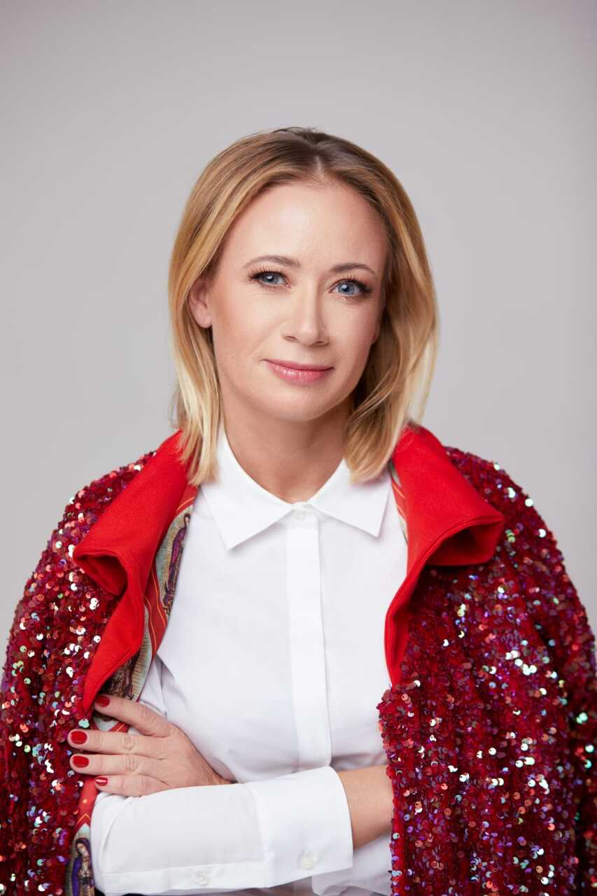
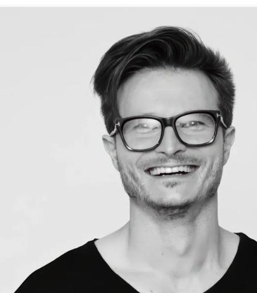

Jestem ekspertką z ponad 25-letnim doświadczeniem w biznesie, która od lat z sukcesami łączy operacyjność ze strategicznym zarządzaniem. W swojej karierze zasiadałam na najwyższych stanowiskach kierowniczych, w tym w zarządzie Polska Press Grupy oraz jako prezeska agencji w Grupie Neuca. Przez lata skutecznie zarządzałam zarówno największymi polskimi, jak i sieciowymi agencjami oraz domami mediowymi, takimi jak Grey Possible czy Ogilvy Interactive. Prowadząc własną firmę Skorwider Consulting, na co dzień doradzam organizacjom B2B w zakresie transformacji cyfrowej, optymalizacji procesów i skutecznego budowania zespołów. Moją supermocą jest przekuwanie złożonych wyzwań biznesowych w płynnie działające, skalowalne mechanizmy. Doskonale rozumiem, jak łączyć zaawansowaną strategię z realnymi wynikami finansowymi. To właśnie głębokie zrozumienie potrzeb współczesnego biznesu, procesów optymalizacyjnych i transformacji technologicznej w naturalny sposób doprowadziło mnie do współtworzenia domu produkcyjnego AI. W erze sztucznej inteligencji, moje doświadczenie gwarantuje, że innowacyjne rozwiązania technologiczne zostaną bezbłędnie i rentownie wdrożone w struktury każdego naszego klienta.

Jestem kreatywnym liderem z ponad 16-letnim doświadczeniem na stanowiskach Executive Creative Director w największych agencjach reklamowych w Polsce. Pracując dla czołowych marek w agencjach takich jak oS3 czy The Digitals, udowodniłem, że potrafię przesuwać granice tradycyjnej komunikacji. Moje kampanie zdobyły dziesiątki najważniejszych nagród branżowych za kreatywność i efektywność, w tym prestiżowe statuetki KTR, Kreatura, Effie Awards czy Mixx Awards (w tym Best in Show). Jako ekspert i wieloletni juror czołowych konkursów, zawsze staram się trzymać rękę na pulsie innowacji i nowych form wyrazu. Przez lata pracy w reklamie doskonale poznałem potrzeby marek, które pragną wyróżniać się najwyższą jakością i nietuzinkowym podejściem. Przejście od tradycyjnego kreowania wizerunku do zaawansowanego wykorzystywania sztucznej inteligencji to dla mnie w pełni naturalna ewolucja. Współtworząc dom produkcyjny AI, łączę swoje doświadczenie i zaplecze kreatywne z najnowszymi technologiami. Dzięki temu pokazuję, że AI nie jest tylko zwykłym narzędziem, ale zupełnie nowym medium, które pozwala nam dziś realizować najbardziej wizjonerskie i przełomowe projekty.